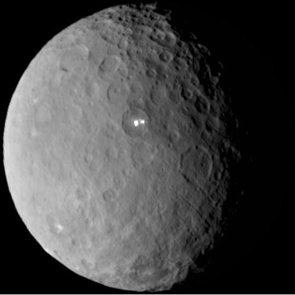

Ceres
Ceres is the only dwarf planet in the inner solar system and the largest object in the asteroid belt between Mars and Jupiter.
Giuseppe Piazzi discovered Ceres in 1801, and it was first called a planet. It holds roughly a third of the asteroid belt's total mass.

Surface and Interior
Ceres is a rocky world with a large amount of water ice beneath its dusty surface. Scientists think a layer of salty liquid may lie deep underground.
The bright spots inside Occator Crater are deposits of salts, left behind when briny water reached the surface and evaporated.
Orbit and Rotation
Ceres orbits the Sun every 4.6 Earth years and spins once in about nine hours.
Because it lives in the asteroid belt, Ceres shares its orbit with countless smaller rocky bodies. That is why it counts as a dwarf planet and not a planet.
Exploration
NASA's Dawn spacecraft arrived at Ceres in March 2015, the first mission to visit a dwarf planet. Dawn had orbited the asteroid Vesta first, making it the first spacecraft to orbit two different bodies beyond Earth.
The mission ended in 2018 when Dawn ran out of fuel, but the spacecraft remains in orbit around Ceres.